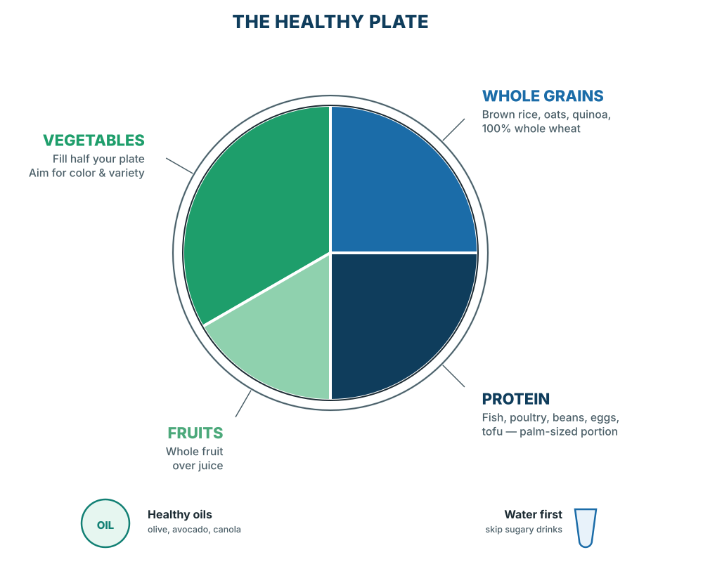
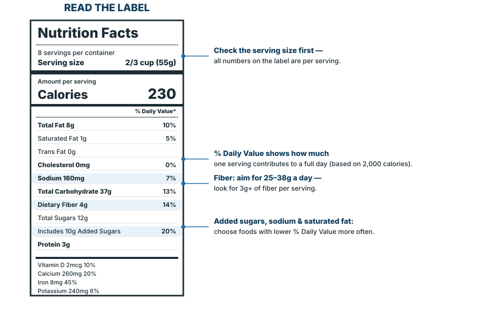
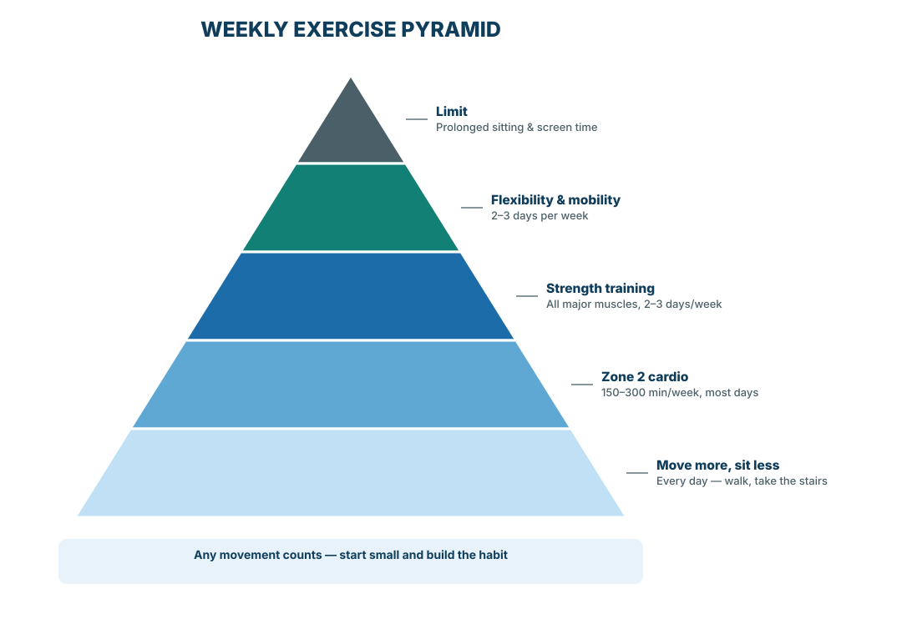
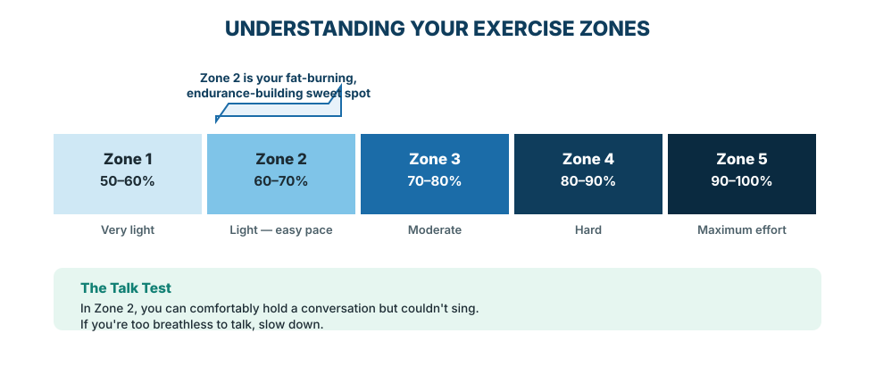
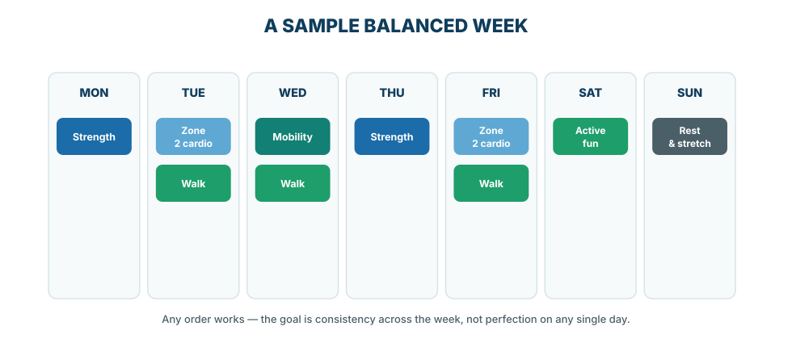
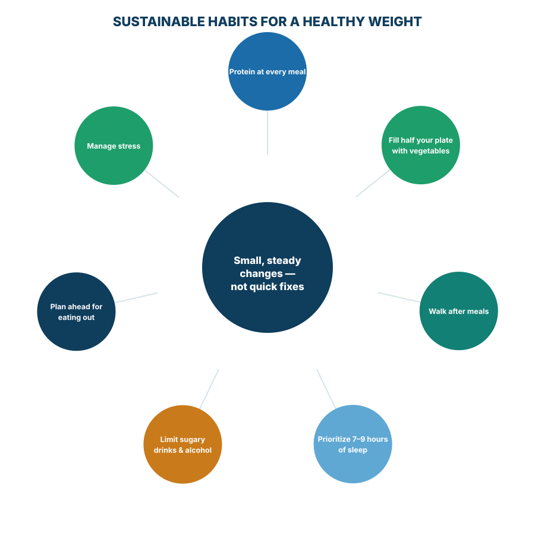
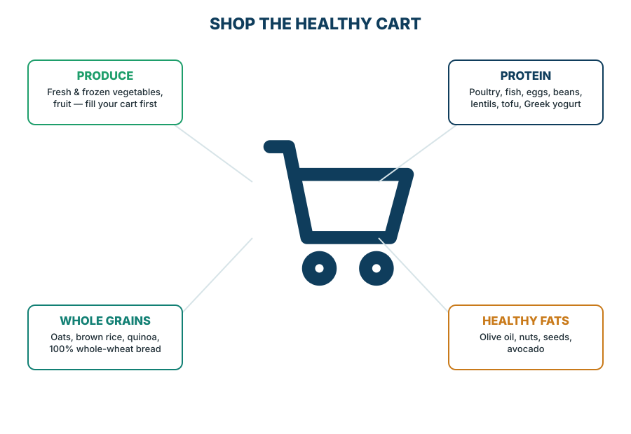
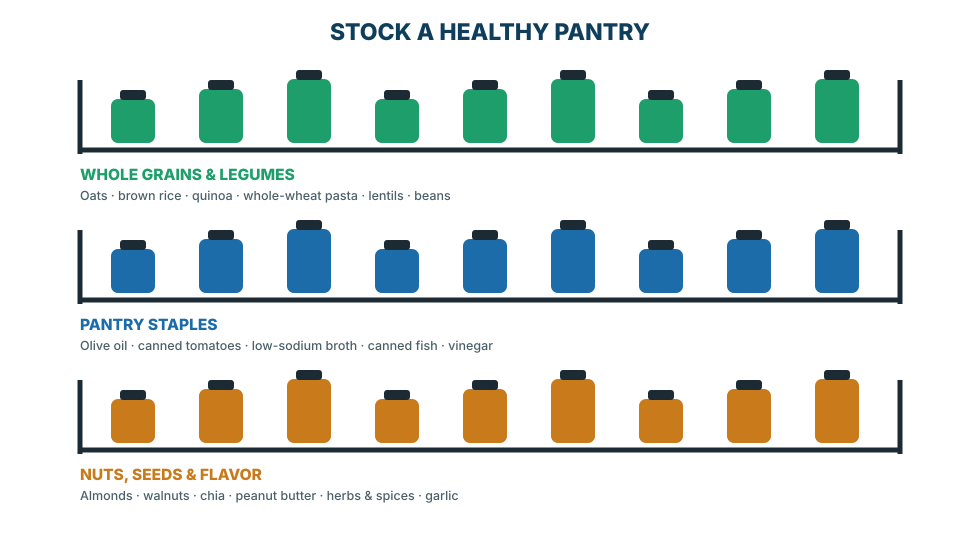

You don't need to change everything at once. These ten habits have the strongest evidence for helping you live longer and feel better — pick one to start tomorrow.
150–300 minutes a week of moderate activity, plus strength training twice a week, lowers your risk of heart disease, diabetes, and early death.
Build meals around vegetables, fruits, whole grains, lean protein, and healthy fats instead of packaged, ultra-processed foods.
Vegetables and fruit provide fiber, vitamins, and antioxidants that protect your heart, gut, and metabolism.
Protein helps preserve muscle, control appetite, and support healthy aging — at every stage of life.
Water supports nearly every process in your body and has zero calories or added sugar.
Sleep restores your brain, balances hunger hormones, and supports a healthy weight and mood.
Strength training preserves muscle and bone as you age and lowers your risk of falls and injury.
Managing stress and staying socially connected are linked to a longer, healthier life.
Blood pressure, cholesterol, blood sugar, and weight trends are early warning signs your body gives you.
Preventive care catches problems early — when they are most treatable.
There is no single perfect diet — but a Mediterranean-style pattern, built mostly from whole foods, has the strongest evidence for a longer, healthier life.

| Nutrient | Choose more often | Enjoy less often |
|---|---|---|
| Protein | Fish, poultry, eggs, beans, lentils, tofu, Greek yogurt | Bacon, sausage, deli & cured meats |
| Fiber | Vegetables, fruit, beans, oats, whole grains | Refined white bread & pastries |
| Fats | Olive oil, nuts, seeds, avocado, fatty fish | Fried foods, stick margarine |
| Carbohydrates | 100% whole grains, legumes, starchy vegetables | Sugary cereal, refined snack foods |
| Added sugar | Whole fruit for something sweet | Soda, candy, sweetened coffee drinks |
| Processed foods | Home-prepared, minimally processed meals | Packaged snacks, fast food, sugary drinks |
Only about 5% of American adults eat enough fiber. Most need 25–38 grams a day.
Large clinical trials show a Mediterranean eating pattern lowers the risk of heart attack and stroke.
No food group is off-limits. Progress comes from what you add — more vegetables, more fiber, more protein — not from what you eliminate.
A simple formula works for almost any meal: protein + fiber + healthy fat + color.

A good snack pairs protein or fiber with something you enjoy. Values are approximate and will vary by brand and portion.
Protein (P) and fiber (F) in grams; calories (Cal) are approximate per listed portion.
Pairing a carbohydrate with protein or fiber slows digestion, so blood sugar rises more gradually and you stay satisfied longer.
Keep two or three of these on hand at home, at work, and in your bag so a healthy option is always within reach.
Adults need 150–300 minutes of moderate aerobic activity a week, plus strength training at least twice a week. Any amount of movement is better than none.



Losing just 5–10% of body weight can improve blood pressure, blood sugar, fatty liver disease, and joint pain.
What you eat matters more than exactly when you eat. Intermittent fasting can be a helpful tool for some people to manage calorie intake, but it isn't required and isn't right for everyone — including those who are pregnant, have a history of an eating disorder, or take medications for diabetes. Ask your care team first.
GLP-1 medications can be an effective option for some adults with obesity or type 2 diabetes. They work best alongside — not instead of — healthy eating, strength training, and sleep, which help preserve muscle while losing weight. Talk with your care team about whether one is right for you.

Whether or not you use medication, pairing weight loss with adequate protein and regular strength training helps preserve muscle and keep your metabolism strong.
Most adults need 7–9 hours of sleep a night. Sleep, stress, and relationships all shape your physical health.
The U.S. Surgeon General has identified loneliness and social isolation as risk factors for heart disease, stroke, and dementia — comparable in impact to other well-known health risks.
If low mood, anxiety, or stress are affecting your daily life for more than two weeks, talk with your care team. Effective treatment is available, and asking for help is a sign of strength, not weakness.
Stop what you're doing and sit or stand comfortably.
Inhale for 4 counts, hold for 4, exhale slowly for 6. Repeat 5 times.
Name one thing you can do next — then take that one small step.
Screenings and vaccines catch problems early. Ask your care team which of these apply to you.
| Screening | Who | How often |
|---|---|---|
| Blood pressure | All adults | Every visit; at least annually |
| Cholesterol | Adults 20+ | Every 4–6 years, more often with risk factors |
| Blood sugar / diabetes | Adults 35–70 who are overweight, or with other risk factors | Every 3 years |
| Breast cancer (mammogram) | Women 40–74 | Every 2 years |
| Cervical cancer | Women 21–65 | Every 3–5 years (Pap/HPV) |
| Colorectal cancer | Adults 45–75 | Colonoscopy every 10 yrs, or annual stool test |
| Lung cancer (low-dose CT) | Adults 50–80 with a significant smoking history | Annually |
| Dental exam & cleaning | All adults | Every 6–12 months |
| Vision exam | All adults | Every 1–2 years, more often after age 60 |
| Hearing check | All adults | Baseline, then as needed |
| Skin check | All adults, especially with risk factors | Annually, or if a mole changes |
Use SPF 30+ daily, seek shade midday, and check your skin monthly for new or changing spots — remember the ABCDEs: Asymmetry, Border, Color, Diameter, Evolving.


| Instead of | Choose more often |
|---|---|
| White bread | 100% whole-grain or whole-wheat bread |
| Sugary breakfast cereal | Oats or a lower-sugar, whole-grain cereal |
| Soda or sweetened tea | Sparkling water or unsweetened tea |
| Potato chips | Air-popped popcorn or nuts |
| Regular pasta | Whole-wheat or legume-based pasta |
| Creamy salad dressing | Olive oil & vinegar |
| Frozen meals, highly processed | Plain frozen vegetables & proteins you season yourself |
Bring this guide to your next visit. Your care team can help you turn any of these habits into a plan that fits your life.
This guide reflects current guidance from major medical and public health organizations. It is educational and does not replace personalized medical advice from your care team.
Dr. Jason Patera is a family medicine physician with Nebraska Medicine. This guide is part of a series of patient education booklets designed to help patients build sustainable, evidence-based habits for lifelong health.
© Nebraska Medicine. This material is for general educational purposes and is not a substitute for professional medical advice, diagnosis, or treatment. Always ask your physician or qualified health provider with questions about a medical condition.
Look for future guides on heart health, diabetes prevention, and healthy aging.